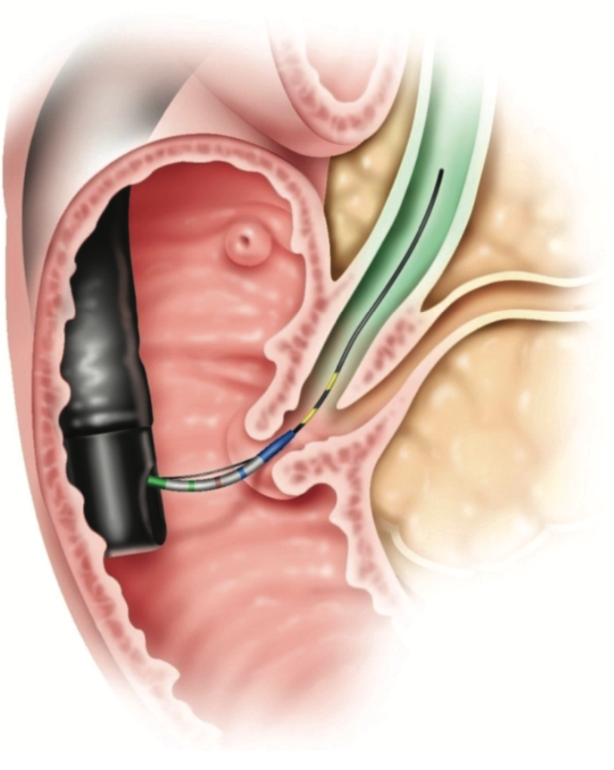

Boston Scientific Disposable Duodenoscope Design
View the final presentation poster by clicking here.
*Note that this project is under NDA and specific design details cannot be shared.*
As part of Olin's senior capstone program (SCOPE), myself and four Olin students worked with Boston Scientific (BSC) to explore potential concepts for their new disposable duodenoscope product. Boston Scientific is releasing the first fully disposable duodenoscope in 2019 to combat potential contamination issues while still offering the same functionality as existing duodenoscopes. We were tasked with exploring potential concepts for future product iterations that would innovate on the existing endoscope design that has existed for years. Boston Scientific kept the project completely open-ended. As a team we had complete freedom to explore and identify problems without being influenced by the company's existing opinions. We spent the first half of our year-long process employing a human-centered design approach, engaging with physicians, learning how to operate a duodenoscope, and understanding pain points of the non-invasive procedure. The second half of the year focused on developing one idea that we had selected. After receiving validation from physicians, we visited Boston Scientific's manufacturing plants to understand the production process and developed a fully working prototype of a new design on the distal end of the scope that enters the body. Additionally, we generated a number of different ideas that were not developed into prototypes, and we filed IP for four ideas.
Project Background

A duodenoscope is a device used in endoscopic retrograde colangio-pancreatography (ERCP) to treat complications in a patient's bile duct. The insertion tube of the device is threaded down the patient's esophagus and navigated through the GI tract into the duodenum using the two-axis steering controls of the device, which features one-to-one rotation from the gear to the tip of the insertion tube. A small LED and camera are at the tip of the insertion tube to aid in navigation. From the duodenum, the physician must bypass the papilla, a contracting muscle that serves as the entry point to the bile duct. The physician threads tools through the inside of the insertion tube that cut and cauterize the papilla in a process known as cannulation, allowing access to the duct. From there, the physician can use other tools for cutting and removing blockages or placing stents that expand the duct. Other duodenoscopes are reusable, undergoing a cleaning process between procedures, but recently a number of patient illnesses and deaths have been linked to the inability to clean mechanisms in the device.
The Process - Developing Novel Ideas
The first semester of the year focused on user research and developing concepts for our design. As a team, we began by conducting research into the ERCP procedure and the device, developing a baseline understanding for user visits. We visited Boston Scientific's headquarters, where we had the opportunity to use the duodenoscope on a model of the GI tract. With a better understanding of the procedure, we spoke to several physicians and technicians who assist physicians throughout the procedure. Doing so offered us a wider view of the procedure as a whole; our focus was not only on the duodenoscope but also on understanding the entire ecosystem around it. We synthesized the results of our interviews and developed a list of 7 major pain points in the procedure and presented them to BSC. As a team, we brainstormed potential designs for the duodenoscope that corresponded with each pain point. After narrowing to a list of potential solutions that we would explore in the second semester, we created low-fidelity sketch models and prototypes to explore each idea's validity. These sketch models and concepts were presented to two additional physicians, and their feedback and input into the design helped us to narrow to the final solution that we chose to develop a working prototype for.
Prototype Development and IP Filing
After exploring more than 50 different ideas and concepts, we narrowed to one particular design change to the distal tip of the device that could potentially improve the process of cannulating to gain entry to the bile duct. Our design factored variability in patient anatomy, user interaction and control, and integration into the existing manufacturing process. To better understand the production of the product, we visited two Boston Scientific manufacturing sites, speaking with process development engineers and assembly line workers to understand how we could design for their manufacturing stream, fixtures, and tools. Additionally, the experience provided a wider view of how Boston Scientific designs products and implements a variety of machines and techniques to produce a product. From there, we developed a to-scale CAD model of our revised design and delivered a scaled-up working prototype of the concept that achieved our design requirements. Throughout the initial design and exploration phase, a number of additional ideas emerged from user interviews and brainstorming. As a team, we took three additional ideas that we found compelling and submitted them to Boston Scientific's IP department for filing. All of this work was presented to the R&D team and the head of Boston Scientific's endoscopy division along with a report documenting our design process and decisions.
Team Dynamics and Structuring
SCOPE is a year-long project managed and run entirely by the student team. As a team of 5, we elected a "Project Owner" (PO) to be in charge of planning meetings, assigning tasks to individuals, and being the point of contact with the liason. We operated on a two week sprint cycle, planning and assigning major tasks for the sprint and aiming for a key milestone at the end of every sprint. Each sprint ended with a "team health" checkup to gather feedback on how we are performing as a team, address any conflicts, and determine how we can improve. The initial design process was conducted as a team effort. I leveraged past design experiences to help guide the team on the right path through problem identification, brainstorming, and concept selection. As we moved to a focus on mechanical design, myself and one other teammate lead the mechanical design of the device while the other two teammates focused on the fabrication and development of the prototype.